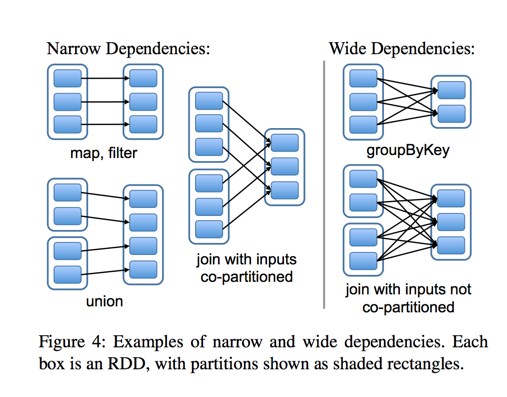

spark 安装部署及standalone模式介绍
学习目标
知道Spark的安装过程，知道standalone启动模式
知道spark作业提交集群的过程
1 spark 安装部署
- 修改配置文件
- spark-env.sh(需要将spark-env.sh.template重命名)
- 配置java环境变量
- export JAVA_HOME=java_home_path
- 配置PYTHON环境
- export PYSPARK_PYTHON=/xx/pythonx_home/bin/pythonx
- 配置master的地址
- export SPARK_MASTER_HOST=node-teach
- 配置master的端口
- export SPARK_MASTER_PORT=7077
- 配置java环境变量
- spark-env.sh(需要将spark-env.sh.template重命名)
- 配置spark环境变量
- export SPARK_HOME=/xxx/spark2.x
- export PATH=$PATH:$SPARK_HOME/bin
2 Spark Standalone模式启动
启动Spark集群
进入到$SPARK_HOME/sbin目录
- 启动Master
./start-master.sh -h 192.168.19.137- 启动Slave
./start-slave.sh spark://192.168.19.137:7077- jps查看进程
27073 Master 27151 Worker- 关闭防火墙
systemctl stop firewalld- 通过SPARK WEB UI查看Spark集群及Spark
- http://192.168.19.137:8080/ 监控Spark集群
- http://192.168.19.137:4040/ 监控Spark Job
3 spark 集群相关概念
spark集群架构(Standalone模式)

Application
用户自己写的Spark应用程序，批处理作业的集合。Application的main方法为应用程序的入口，用户通过Spark的API，定义了RDD和对RDD的操作。
Master和Worker
整个集群分为 Master 节点和 Worker 节点，相当于 Hadoop 的 Master 和 Slave 节点。
- Master：Standalone模式中主控节点，负责接收Client提交的作业，管理Worker，并命令Worker启动Driver和Executor。
- Worker：Standalone模式中slave节点上的守护进程，负责管理本节点的资源，定期向Master汇报心跳，接收Master的命令，启动Driver和Executor。
Client：客户端进程，负责提交作业到Master。
Driver： 一个Spark作业运行时包括一个Driver进程，也是作业的主进程，负责作业的解析、生成Stage并调度Task到Executor上。包括DAGScheduler，TaskScheduler。
Executor：即真正执行作业的地方，一个集群一般包含多个Executor，每个Executor接收Driver的命令Launch Task，一个Executor可以执行一到多个Task。
Spark作业相关概念
Stage：一个Spark作业一般包含一到多个Stage。
Task：一个Stage包含一到多个Task，通过多个Task实现并行运行的功能。
DAGScheduler： 实现将Spark作业分解成一到多个Stage，每个Stage根据RDD的Partition个数决定Task的个数，然后生成相应的Task 放到TaskScheduler中。
TaskScheduler：实现Task分配到Executor上执行。
